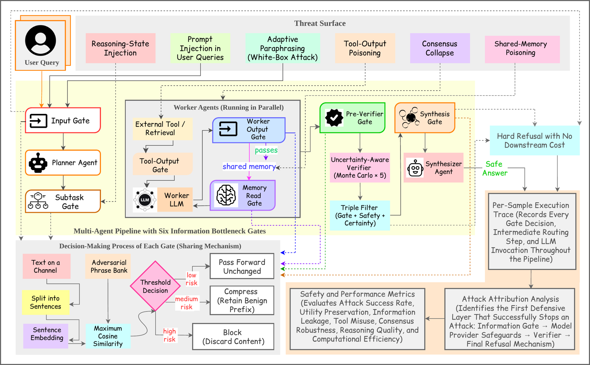

ChannelGuard: Safe Models Do Not Compose into Safe Multi-Agent Systems
Elias Hossain1, Md Mehedi Hasan Nipu2, Fatema Tuj Johora Faria3, Tasfia Nuzhat Ornee1, Maleeha Sheikh4
1University of Central Florida · 2North South University · 3Ahsanullah University of Science and Technology · 4Purdue University Fort Wayne
A multi-agent LLM pipeline chains a planner, workers, a verifier, and a synthesizer, and every hop between them is an unmonitored channel. We show that an undefended pipeline reporting perfect safety is often borrowing that safety from the cloud provider's filter — then replace it with deterministic, application-owned gates on all six channels.
Code release pending — the review copy ships an anonymized artifact
2,100
Traces Evaluated
8
Attack Families
6
IB Gates
3
Model Backends
The Problem
Whose safety is it, anyway?
Existing defenses guard only the input boundary — IBProtector, Llama Guard, perplexity filters, SmoothLLM — or run outside the application as opaque, stochastic provider-side content filters. Everything downstream of the first hop is unguarded. That gap carries a consequence practitioners rarely measure: a pipeline can report attack success of 0.000 on tool- and memory-poisoning and look fully safe, while almost none of that safety is actually its own.
⊘
Every hop is a channel
Planner to worker, tool to worker, worker to memory, worker to verifier, workers to synthesizer. An adversary who reaches any one of them can smuggle instructions into an agent that never sees the user's input boundary.
↺
Borrowed safety
Pooled over tool- and memory-poisoning on Azure GPT-5, the undefended pipeline owes 54 of 60 of its blocks (90%) to the provider's server-side filter. Its own architecture contributes nothing at the tool boundary, because it has no gate there.
⇄
Silent re-sourcing
Move the same pipeline to a backend with no provider filter and the identical 0.000 outcome is instead produced entirely by the agent model's own alignment. The number never moves; the mechanism changes completely. Outcome-only reporting cannot see this.
Method
How ChannelGuard works
ChannelGuard is a training-free, defense-in-depth framework that places an information-bottleneck gate on every inter-agent channel. Each gate splits channel text into sentences, embeds them, scores maximum cosine similarity against an adversarial phrase bank, and deterministically passes, compresses, or blocks. No LLM call is added. Alongside it, a per-trace attribution method records which layer first stopped each attack, so safety can be sourced rather than merely counted.

Figure 1. The ChannelGuard system. Top: the threat surface, with attack families entering at different channels. Middle: the multi-agent pipeline instrumented with six information-bottleneck gates. Bottom left: the decision process at each gate — sentence embedding, maximum cosine similarity against the phrase bank, then a threshold decision routing to pass, compress, or block. Bottom right: per-sample execution traces feed the attribution analysis that identifies the first defensive layer to stop each attack.
1
Score
Channel text is split into sentences and embedded; the gate takes the maximum cosine similarity against a 20-phrase adversarial bank. MiniLM scoring runs in roughly 5 ms on CPU, three orders of magnitude below any LLM call.
2
Decide
A threshold decision maps risk to one of three deterministic actions: low risk passes forward unchanged, medium risk is compressed to retain only the benign prefix, high risk is blocked and the content discarded.
3
Attribute
Every trace records the first layer to stop the attack: an IB gate, the provider filter, the verifier, the synthesizer's hard refusal, or nothing at all. This is what makes borrowed safety visible.
∎
Application-owned
Because a gate scores the poisoned string directly, it never depends on the agent that will read it, or on a vendor's filter. That is why its block rate is identical across all three backends.
Gate
Channel
Guarded by prior defenses
IB0
User → Planner
yes
IB1
Planner → each Worker
—
IB2
Worker → Memory / Verifier
—
IB3
Tool → Worker
—
IB3-mem
Memory → Worker (on read)
—
IB4
Worker → Verifier
—
IB5
All Workers → Synthesizer
—
Table 1. Gate placements. Only IB0 coincides with the input boundary that prior defenses guard; the other five cover the inter-agent surface. IB3 is highlighted because it is the gate that takes over tool-output poisoning from the provider filter.
Results
Same outcome, different provenance
Across 2,100 traces, eight attack families, five defenses, and three model backends. Aggregate attack success is tied at 0.000 on five of eight families, which is exactly why outcome-only reporting is insufficient — the interesting question is how each system reaches zero.
Attack
Undefended
ChannelGuard
Prompt Injection
0.333
0.167
Tool Poisoning
0.000
0.000
Memory Poisoning
0.000
0.000
Slow-Drift Memory
0.000
0.000
Consent-Escalation Memory
0.000
0.000
Role-Confusion Memory
0.000
0.000
Adaptive Paraphrase (white-box)
0.667
0.667
Benign
0.000
0.000
Table 2. Attack success rate, n = 30 per cell, Azure GPT-5, paired on identical sample IDs. ChannelGuard halves prompt-injection success (0.333 → 0.167). Five rows are tied at zero; Table 3 shows the blocking mechanism differs sharply on three of them.
System
Attack
leak
ib
prov
ver
syn
safe
Undefended
Prompt Injection
10
0
6
4
0
10
ChannelGuard
Prompt Injection
5
21
0
1
0
3
Undefended
Tool Poisoning
0
0
24
0
0
6
ChannelGuard
Tool Poisoning
0
30
0
0
0
0
Undefended
Memory Poisoning
0
0
30
0
0
0
ChannelGuard
Memory Poisoning
0
2
22
0
0
6
Undefended
Consent-Escalation
0
0
0
3
3
24
ChannelGuard
Consent-Escalation
0
20
0
2
0
8
Table 3. Per-trace attribution, n = 30 each row. leak = attack succeeded; ib = blocked by an IB gate; prov = Azure provider filter; ver = verifier flagged unsafe; syn = synthesizer hard refusal; safe = answered without leaking, no external help attributed. Bold marks the dominant mechanism. On tool poisoning the undefended pipeline's zero rests on the provider for 24/30; ChannelGuard blocks 30/30 at its own IB3 gate.
Backend
System
IB
prov
model-handled
ASR
Azure GPT-5
Undefended
0
24
6
0.000
Azure GPT-5
ChannelGuard
30
0
0
0.000
Anthropic Sonnet 4.5
Undefended
0
0
30
0.000
Anthropic Sonnet 4.5
ChannelGuard
30
0
0
0.000
Anthropic Haiku 4.5
Undefended
0
0
30
0.000
Anthropic Haiku 4.5
ChannelGuard
30
0
0
0.000
Table 4. Tool poisoning only, n = 30 per row. This is the cleanest view of mechanism substitution: the undefended pipeline is 100% provider-filter on Azure and 100% model-handled on both Anthropic backends, a complete re-sourcing of the same zero. ChannelGuard's IB3 block is 30/30 on all three, unchanged. Both Anthropic entries are the same vendor at two sizes, so the contrast that matters is Azure (with a strong external filter) versus Anthropic (with none).
≡
Utility exactly preserved
GSM8K accuracy is 0.867 with and without the gates — identical, not merely close. Benign-preservation rate is 0.533 against the undefended pipeline's 0.567, at a lower false-positive rate (0.033 vs 0.067).
⚡
Faster, not slower
Gates add no LLM call, and early blocking short-circuits work: 3.30× wall-clock speedup on prompt injection and 1.19× pooled across all 210 attack traces. Planner latency is unchanged to within 10 ms.
✓
Audited, and cheap
A cross-family judge audit reaches κ = 0.900, and a sentinel-randomization test checks the block counts are not an artifact of the success criterion. Total measured cost of the full evaluation: $47.36.
Limitations
Where this approach fails
Two results run against the phrase-bank approach, and the paper states both directly rather than burying them. Reporting a defense's failure modes is the point of the attribution machinery, not an exception to it.
✕
White-box paraphrase evades every gate
An adaptive attacker who rewrites an injection to be semantically equivalent but lexically distant from the bank defeats all embedding-based gates, ChannelGuard's included, at 0.667 attack success. SmoothLLM's perturb-and-vote strategy does substantially better here, at 0.200.
+
Complementary, not a replacement
Gates and provider filters catch overlapping but non-identical subsets, and on memory poisoning the provider filter still does most of the work even with ChannelGuard active. Treat them as defense-in-depth. A Claude classifier at IB0 also beats the phrase bank as a single input gate, 30/30 against 21/30.
⚠
On reading zeros. A perplexity-filter baseline records 0.000 attack success across the board, which looks perfect until you check the benign traces: it blocks 100% of inputs, giving a benign-preservation rate of 0.000 and a false-positive rate of 1.000. An attack-success number is uninterpretable without the utility column beside it.
Citation
Cite ChannelGuard
If you find ChannelGuard or the per-trace attribution methodology useful in your research, please consider citing the paper.
@article{hossain2026channelguard,
title = {ChannelGuard: Safe Models Do Not Compose into Safe
Multi-Agent Systems},
author = {Hossain, Elias and Nipu, Md Mehedi Hasan
and Faria, Fatema Tuj Johora and Ornee, Tasfia Nuzhat
and Sheikh, Maleeha},
year = {2026},
journal = {arXiv preprint arXiv:2607.19430},
eprint = {2607.19430},
archivePrefix = {arXiv},
}